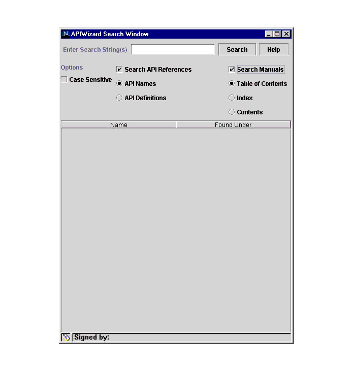

APIWizard Search Mechanism Help File
The APIWizard supports searches for specified strings against both the API definition files and the accompanying user's
guide(s). Click the Find button on the Topic/Object Selection frame to display the APIWizard Search dialog
(see the figure APIWizard Search Dialog Box).
Figure 1-4: APIWizard Search Dialog Box

The Search dialog box contains the following fields, buttons, and frames:
- Enter Search String(s)
- Enter the specific search string or strings in this field.
By default, the browser performs a non-case-sensitive search.
- Search/Stop
- Select the Search button to begin a search. During a search, this button
name changes to Stop. Select the Stop button to stop a search.
- Help
- Select this button for help about the APIWizard search feature. The
APIWizard presents this help data in the Display frame.
- Case Sensitive
- Select this button to specify a case-sensitive search.
- Search API References
- Select this button to search for data on API functions. Select the API Names
button to search for function names only. Select the Definitions button to
search the API function names and definitions for specific strings.
- Search Manuals
- Select this button to search the user's guide(s) data. Select the Table
of Contents button to search on Table of Contents entries only. Select the Index button to search
only the Index. Select the Contents button to search on all text in the user's guide(s).
- Name
- This frame displays a list of strings found by the APIWizard search.
- Found Under
- This frame displays the location in the online help data where the APIWizard found the string.
Supported Search Types
The APIWizard Search supports the following:
Performing an APIWizard Search
Follow these steps to search for information in the APIWizard online help data:
- Select the Find icon at the top of the Topic/Object Selection frame.
- Specify the string or strings to be searched for in the Enter Search String field.
- Select Case Sensitive to specify a case-sensitive search. Note that the default search is non-case-sensitive.
- Select either or both of the Search API References and Search User's Guide buttons. Select the
options under these buttons as desired.
- Select the Search button. The APIWizard turns this button red and is renames it Stop
for the duration of the search.
- If the APIWizard finds the search string in the specified search area(s), it displays the string in
the Name frame. In the Where Found frame, the APIWizard displays links to the online help data that
contains the found string.
- During the search, or after the search ends, select an entry in the Name or Where Found frames
to display the online help data for that string. The APIWizard first updates the Topic/Object
Selection frame/ tree, and then presents in the Display frame the online help data for the selected
string.